04 · FP8：稠密乘法（dot_general）只占约 6%，为什么步时能少两成
这章解决什么：大号模型每层都要先把专家权重从别的 device 收过来（all-gather）才能算，这段搬运比乘法本身贵。FP8 把每个数从 2 字节压到 1 字节：乘法快一倍是次要的，搬运字节减半才是主要的。但前提是先压再搬（先量化再收集）；先搬后压，搬的还是 2 字节，还白加一遍量化。
在全书的位置：叠在 HLO 调度 pass（02）之上的第二大刀——调度 pass 先把通信排开，FP8 再把要搬的字节砍半；没有前者，FP8 缩短的 AG 也藏不进计算。术语查 README 术语表。
步时指数：大号模型以单片 BF16 最初基线 = 100（全书统一，越小越快）；小号模型以开发期起点 = 100。只在单个 A/B 里出现的数只给百分比。
包含的 feature 与依赖顺序：
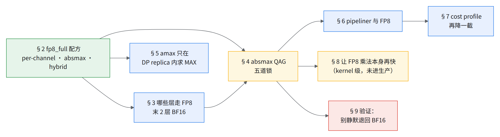
先定配方（§2），再定哪些层量化（§3）；QAG（§4）依赖配方里的 per-expert scale 和 absmax，是 FP8 真正变快的那一刀；pipeliner（§6）、cost profile（§7）是 QAG 之后才有意义的调整；DP 维的 amax（§5）只依赖配方，多片才有意义。
💡一句话结论
- FP8 在大号模型上省的是通信字节不是乘法：先量化再 all-gather（QAG）才快。不带 QAG 反而慢：小号模型上不带 QAG 比 BF16 慢约 15%，开 QAG 后比不带快约 15%；在阶梯上（pipeliner、HLO 通信重排已关）关 QAG 慢约 35%，在 knockout（只关一项的消融）基线上单关约 25%；关掉整个 FP8 回到 BF16 反而比「FP8 不带 QAG」快约 10%（§4）。
- 最危险的坑是悄悄退回 BF16（§9）。
- 四类阻力：配方要长跑才验得出（§2）；收益藏在通信里，要五道锁全开（§4）；量出来的数可能根本没在跑 FP8（§9）；为 BF16 关的共享开关拖慢 FP8（§6）。
- 定位：性能上该做，精度没闭合（§11）。
- 1–2% 把已经是 FP8 的稠密乘法（XLA
dot_general，不含专家 GMM）打满峰值，整步最多还能再快这么多 - 约 20% FP8 + QAG 对 BF16 的步时降幅（大号模型 1 片 AOT，指数 55 → 44）
- 约 75% Routed MoE 里 AllGather 暴露时间的降幅
- 约 35% 阶梯上关掉 QAG 的步时涨幅（第 5 → 6 级，指数 51 → 68）
1.先算账：FP8 的收益为什么不在乘法上
v7x 峰值：每芯片 BF16 2,307 / FP8 4,614 TFLOP/s → 每 device 1,153.5 / 2,307。
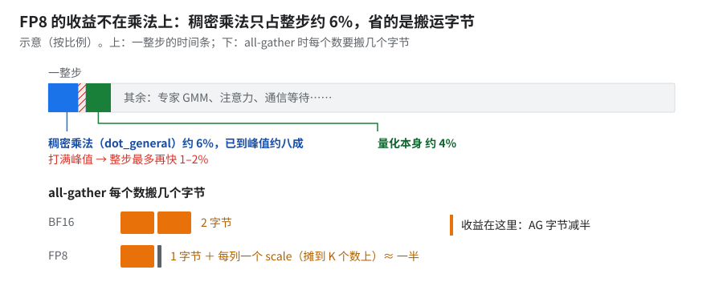
看下半：省的是搬运的字节。上条是大号模型，dot_general 不含专家 GMM、已到每 device FP8 峰值约八成，那 1–2% 是已 FP8 后的余量，不是 BF16→FP8 的收益；量化约 4%（小号模型约 9%）。
这份 profile 用的是 Tokamax GMM v2：乘法已经是更好的 kernel，FP8 乘法在整步里仍只占这么一点——「FP8 不靠乘法」的证据就是它。
为什么：reduce_max 读得少却更贵，是因为它跑不满带宽，不是因为搬得多——所以量化开销要按 profile 里的带宽利用率估，别按字节估。按字节算 convert 又读又写应更贵，实测反过来：两者有效访存量几乎相同（差约 2%），差在效率：reduce_max 只跑到峰值带宽的约 55%，convert 约 75%。归约为什么跑不满 [推断]：可能是归约实现、张量小、shape/layout 不同，没逐项验证。
把握：推断 · 出处：§1 量化开销 profile 的数据
背景：E4M3 / E5M2 见 arXiv 2209.05433；DeepSeek-V3 细粒度 FP8 见 arXiv 2412.19437 §3.3。
- PyTorch FSDP2 的 float8 all-gather 就是 QAG——「省 50% 带宽，代价是多一次 AMAX all-reduce」（PyTorch dev-discuss）；AMAX 跨 DCN 的改法见 §5。
- 128 张 H100 训 Llama3-70B 快 1.5 倍，约 20% 来自 all-gather、80% 来自矩阵乘（同一篇 dev-discuss 原文）；大号模型正好反过来 [推断]。
2.fp8_full 配方：per-channel · absmax · hybrid（定下每个数怎么量化）
前置：无（FP8 的地基）；后续：§3 哪些层走 FP8、§4 QAG 依赖这里的 per-expert scale 和 absmax；§5 amax 依赖 absmax 每步现求 amax。
收益：配方本身不直接给速度，它决定精度能不能长跑过、以及后面 QAG 能不能成立。生产配方：Qwix fp8_full、每专家一套 per-channel scale（GMM 权重分组量化开关）、absmax 标定、FP8 格式开关设为 hybrid（前向 E4M3、梯度 E5M2）。
怎么考虑的：
| 维度 | 生产取值 | 为什么不是别的 |
|---|---|---|
| 粒度 | per-channel（每专家一套） | blockwise 1×128 / 128×128 在 TPU 上比 BF16 慢约 3 倍（§2.1）；扫 10 种配方里 per-channel 最快且精度过（§2.2） |
| 标定 | absmax | fixed,-224,224 长跑出尖刺（§2.2） |
| 格式 | hybrid（前向 E4M3、梯度 E5M2） | 见 §2.2「格式」 |
| 哪些层 | 末 2 层留 BF16 | 与 Megatron 对齐（§3） |
2.1 GPU 式 blockwise 在 TPU 上为什么慢
-
Qwix 版 blockwise（仿 Megatron/TE 1×128 / 128×128）：把
dot_general从 per-tensor 换成 per-block。精度对得上，速度不行。- 精度：DenseGeneral 输出 cosine 0.9993。
- 速度（微基准相对 BF16，×＝相对速度，<1 是变慢）：DenseGeneral 前向约 0.3×、训练约 0.4×；MlpBlock 前向约 0.7×、训练 0.5×。
- 原因：calibration（求 amax）、quantize、convert 三步没融合，各一趟 HBM 往返，FP8 乘法省下的不够付。要融合就得写 Pallas kernel。
-
推理侧的 FP8 kernel 不能直接拿来训练：
推理 kernel 训练前向需要 权重 已预量化好，离线存 FP8 每步权重都在变，要实时量化 scale 粒度 LHS 1×128、RHS 1×128（两边都是一维块） LHS 1×128、RHS 128×128（权重是二维块） 只能另写 per-block FP8 matmul。坑：「都叫 blockwise FP8」不代表能互换，先对 scale 粒度和量化时机。
-
Pallas 版仍慢约 3 倍：不是 kernel 慢，是 tile 封顶——Tokamax 把 tile 封顶 128³，grid 点多约 256 倍；放开封顶后 BF16 也快 3–19 倍，而 FP8 blockwise 仍比 BF16 慢约 10–50%：在最优 tiling 下 blockwise FP8 并不比 BF16 快。
2.2 扫配方：粒度、格式、标定
在上一代模型上扫 10 种配方（相对 MaxText BF16 的 step 比）：
| # | 粒度 | 格式 | 标定 | 精度 | step 比 |
|---|---|---|---|---|---|
| 1 | blockwise 128×128 | e4m3 | absmax | ✅ | 10× |
| 2 | subchannel 1×256 | e4m3 | absmax | ✅ | 3× |
| 3 | subchannel 1×512 | e4m3 | absmax | ❌ | 1.7× |
| 5 | 1×512 | e4m3 | fixed,-224,224 |
❌ 宽尖刺 | 1.1× |
| 6 | blockwise 512×512 | e4m3 | absmax | ❌ | 1.6× |
| 9 | per-channel | e5m2 | fixed,-224,224 |
❌ 尖刺 | 1.0× |
| 10 | per-channel | e5m2 | absmax | ✅ | 1.0× |
-
表里只列 7 种，#4、#7、#8 略。
-
标定栏：非 fixed 的几行按上游默认 absmax 填 [推断：上游
base.yml三个*_quantization_calibration_method默认都是absmax]。 -
#5、#9 的粒度栏对 fixed 不生效：fixed 标定在 qwix／上游 MaxText 里恒为整张量一个 scale（下面「为什么」；所用版本未核）。
-
#9、#10 都比 BF16 略快（约 0.97×，四舍五入成 1.0×）。
粒度和精度的关系不单调，别从上表读出「越粗越差」：
- 同用 absmax，1×256、128×128 过了，1×512（#3）、512×512（#6）没过，比它们都粗的 per-channel（#10）反而过了。为什么不单调，没有解释。
- #3（subchannel 1×512，步时约为 BF16 的 1.7 倍，loss 差大但 kernel 逐位一致）失败归因于前后向权重量化不一致、不是粒度本身；换成 hybrid 也没过（表外一组）。#6 没有归因。
- #3 是 e4m3、#10 是 e5m2，也不是单变量。
标定：absmax，不用 fixed；治长跑尖刺的是这一项。参照对象是 MaxText 的 DeepSeek-V3 FP8 配置，它用 fixed,-224,224（上游测试里 deepseek3-671b 配 fp8_full 的用例也是这个值）；delayed scaling 效果差，不用。fixed 在多数据集长跑上的对照：
| 只改了 | 结果 |
|---|---|
| 无（fixed） | 多个尖刺 |
| micro-batch 形状 BS10×GA4 → BS4×GA10 | 4,000 步内没尖刺，再往后照样出：只是推迟 |
| 两个 calibration 都改 absmax | 尖刺消失 |
换 batch 形状只把尖刺往后推，换标定才治本。
看左图粗线越过 +224 之后。
为什么：短跑没事、长跑出尖刺，是因为离群值到训练后期才冒出来。
fixed,-224,224不论格式真实值上限都是 ±224；LLM 的离群激活常在后期才出现（Fishman 等报告约 200B token 后才发散）。absmax 按构造不溢出。GPU 上相当于：absmax 就是 Transformer Engine 的 current scaling（每次按当前 amax 定 scale）。
把握：源码证实 · 出处：qwix
qarray.py::calibrate（「Fixed calibration is always per-tensor」）、numerics.py::convert_to（浮点 clip）；MaxTextlayers/quantizations.py::get_static_scale；arXiv 2409.12517；Transformer Engine「FP8 Current Scaling」文档
⚠️别把
fixed安到 DeepSeek-V3 论文头上DeepSeek-V3 论文（arXiv 2412.19437 §3.3）用的是在线细粒度 max-abs 缩放：激活每 1×128 tile、权重每 128×128 block 当场求 max-abs 定 scale，不用固定 scale，也不用 delayed scaling；格式是全部张量 E4M3（论文说靠细粒度 scale 兜动态范围），不是 hybrid。「fixed 毁收敛」是本书在 MaxText 配置上的经验，和论文的成功不矛盾。
scale 形状：每专家 [E,1,N]，不用默认的 [1,1,N]。为精度考虑过三个方向——stochastic rounding、GMM scale 每专家一套、wgrad Hadamard——只有 per-expert scale 留了下来，并成了 QAG 的前提（§4）；SR、Hadamard 生产配置里没有，没有对照数据。
格式：hybrid。大号模型生产配置的 FP8 格式开关是 hybrid，即前向 E4M3、梯度 E5M2。格式选择没有单变量 A/B 依据：
- 照抄时以生产的
hybrid为准，格式要自己对拍 loss 再定；外部参照是 TE 的 hybrid 和 DeepSeek-V3 的全 E4M3（上面 WARN）。 - 三种格式都用过：扫描胜出的 #10 是 e5m2（标定按 absmax 填 [推断]），也用过前后向全 e4m3，生产是
hybrid（与 11 · A08 一致）。三者之间没有单变量对照。切到hybrid时「FP8 对 BF16 的 loss 门降为 informational」（§11）同时生效，两者是否相关未核。 - 梯度格式必须确认真的生效：反向梯度 dtype 若在实现里写死、不看 FP8 格式开关，配置不报错但不生效（静默 bug）。所以全 e4m3 配置的「反向 e4m3」是否生效未核。
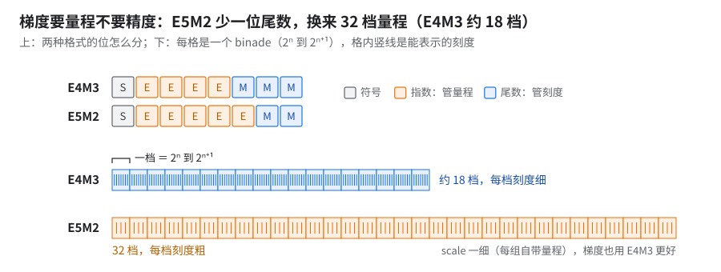
E4M3 约 18 档、E5M2 32 档，看刻度粗细。
为什么：梯度要的是量程不是精度，所以整张量共用一个 scale 时梯度给 E5M2——这就是 hybrid。scale 一细（1×128、32 元素块），每组自带量程，梯度也用 E4M3 更好。所以选格式先看反向梯度的 scale 粒度；本书模型的梯度 scale 粒度未核。
GPU 上相当于：Transformer Engine 的
Format.HYBRID（前向 E4M3、反向 E5M2）。把握：文档证实 · 出处：arXiv 2209.05433（E4M3／E5M2 格式定义）；Transformer Engine「FP8 primer」；arXiv 2506.08027 §3.2.2；DeepSeek-V3 §3.3
2.3 原理：为什么一列一个 scale
数学原因：共用一个 scale 的那批数，必须正好是一起被加起来的那批。上投影 y = x·W，W 是 [K, N]（K ＝ hidden，N ＝ 专家 FFN 宽）。
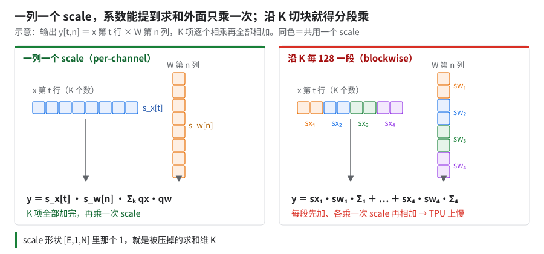
右边分段乘就是 blockwise 在 TPU 上慢的原因（§2.1）。激活同理：一行（一个 token）一个 scale。
- 每个专家三个矩阵：gate、up 的 scale 个数 ＝ N，down（
[N, K]）的 scale 个数 ＝ K；gate/up 融合开关未开，gate / up 分开 - 专家 FFN 比 hidden 还窄
- 专家权重按 FSDP 维整块切开（五道锁里
shard_exp_on_fsdp那道），scale 本地算完就是全局值（§4 归属图）
按列求 max 怎么读内存：
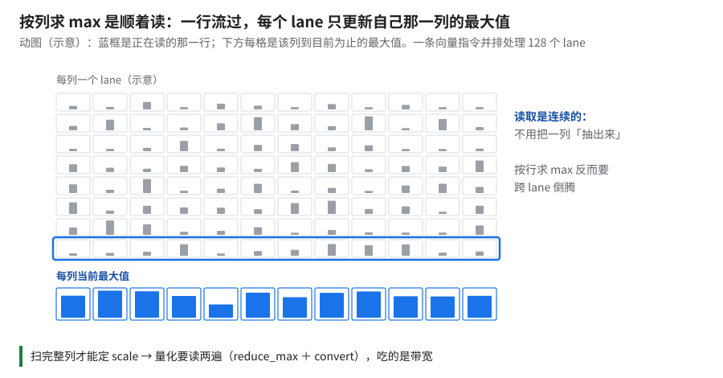
TPU 向量单元并排 128 个 lane，按列 max 是便宜方向。
- 和「先还原再乘」严格等价；和原始 BF16 比有量化舍入误差
- 累加器是 FP32，K 项之和 FP8 装不下
- 输出每列挂的权重 scale 都不同，下一层要的却是一行一个 scale —— 形状对不上，只能乘回真实值再按行重新量
- 上投影后面是 SwiGLU，非线性只认真实值
- 乘回去融合在 matmul 收尾里做，直接吐 BF16，不多搬一趟内存
2.4 跨框架对 FP8 配方的差异清单
Megatron/TE 对 MaxText，单测对拍没做完。换框架对拍 FP8 前先逐行对这张表，否则分不清 loss 差异是 bug 还是配方不同（另见 12）。
| 维度 | 要对齐什么 |
|---|---|
| dtype | 前向 / 反向各用 E4M3 还是 E5M2 |
| scaling 粒度 | blockwise 1×128 / 128×128 还是 per-tensor |
| 标定时机 | delayed scaling（用历史 amax）还是 JIT（当场算） |
| amax history | 有没有历史窗口；跨 rank 是否求 MAX 后统一 |
| 转置 | 反向要用的转置是缓存前向量化好的，还是从高精度重新转置再量化（两者舍入不同） |
3.哪些层走 FP8：末 2 层留 BF16
前置：§2 配方；后续：§4 QAG 只作用在走 FP8 的层上；末层 BF16 的权重走不了 QAG，是 §10 里编译显存超限的大头。
收益：没有速度收益，是精度上的保守选择；代价是尾层权重要 BF16 all-gather。
生产长训全是 FP8：文本大号模型 10+ 片、20+ 片作业和比 10+ 片小的另一个多片配置（每片仍是 FSDP512；指数约 45；下称较小多片配置），都是 FP8。多模态版的 10+ 片 AOT 作业也是 FP8（指数 56，用的是多模态底，不和大号指数混比，见 12）。
一层里不是全换 FP8。Qwix 规则：
| 走 FP8 | 留 BF16 |
|---|---|
decoder 各层、KDA/MLA 前缀段、MTP 块里的 dot_general / gmm / ragged_dot：QKV 投影、输出投影、专家 FFN、共享专家 |
路由器 gate、注意力核心 attention_op（QK、AV 两次乘法；规则 .*/(?:gate|attention_op)(?:/.*)? 排除）。对应 Megatron 的 fp8_dpa=False |
| 尾段 BF16 的 module path 正则圈出的整层 | |
| KDA 的 Pallas 内部、embedding、LM head [推断：不在规则匹配的 op 里] | |
| ViT（多模态版）整塔 |
怎么开：打开首尾层 BF16 三键里的总开关，首部层数设为 0、尾部层数设为 2（11）。只有最后 2 层，首层不在内。这套键的默认值是首 0／尾 1，与 Megatron 默认 1／1 不一致。
怎么考虑的：照抄 GPU，TPU 上没做过消融。末 2 层是为了与 Megatron 对齐；小号模型对齐 GPU 用的是末 1 层。
实现：Qwix 规则按 module path 静态匹配，而 nn.scan 的各迭代共用一个 path → 首尾层 BF16 只能拆 scan（head / 中间 / tail），checkpoint 保持旧布局。
坑：
- 尾层权重走不了 QAG、要 BF16 all-gather（§10 编译显存超限的大头）。
- 首尾层 BF16 三键在量化类型不对时是静默 no-op（§9）。
- 留几层 BF16：未做消融，无依据，需自测。测法：
- 同一 checkpoint、同一数据顺序、同一 GBS，只扫尾层数（如 0 ／ 1 ／ 2），想动首层就另加一组。
- 每组记三样：对 BF16 参考的逐步 loss 差、步时、HBM 峰值。
- 想更早看到信号：固定一个 batch，逐层比 FP8 和 BF16 的层输出相对 L2，看误差是不是集中在最后几层。
- 取过得了你自己定的 loss 闸（§11）的最小层数；闸怎么定由你们决定，本书不给值。
3.1 共享专家要不要也留 BF16（未测）
各投影换 FP8 能快多少（大号模型 BF16 vs FP8 的 dot_general profile，只比 dot 本身）：
| 投影 | FP8 加速比 |
|---|---|
输出投影 o_proj |
1.7× |
| dense MLP | 1.6× |
output_gate_proj |
1.5× |
qkv_proj |
1.2× |
| 共享专家 | 1.1× |
- 共享专家是反例：上表 1.1× 只比 dot 本身；把量化准备（
convert_element_type＋reduce_max）算进来，它吃掉大部分 dot 收益，共享专家模块的前向整体反而慢约 30%。[推断] 矩阵小时量化两遍的带宽账比乘法省下的多，留 BF16 可能更划算（没做过 A/B）。路由专家 GMM 没统计。 - 写法：在全层规则之前插一条
weight_qtype／act_qtype／bwd_qtype全为 None 的规则，module_path匹配共享专家。依据：Qwix 规则先匹配先生效（上游layers/quantizations.py路由器规则的注释写明，所以它排在全层规则前面）。- 上游：路由器规则是
module_path=r".*/gate$"，但quantize_router_proj默认 true、默认不加这条排除，要自己新加；子模块在RoutedAndSharedMoE里叫shared_experts。 - 这套实现：用一条
(?:gate|attention_op)排除正则，把共享专家的模块名加进这组备选。自研 decoder 先打印自己的模块路径再定名字。
- 上游：路由器规则是
- 验证规则生效：按 §9.1 数 f8 乘法，命中清单里不再有共享专家，其余层的计数不变。
- A/B：同一份源码只改这一条规则，比三样：步时、profile 里共享专家模块的前向和反向时间（上面只量了前向）、§11 的 loss 闸。
4.absmax QAG：先量化再 all-gather（五道锁一道都不能少）
前置：§2 的 per-expert scale ＋ absmax；§3 定下哪些层走 FP8；专家沿 FSDP 整块切（shard_exp_on_fsdp）；Tokamax GMM。后续：§6、§8、§9。
收益（三种比法基线不同，不能互相换算）：
| 比法 | 收益 | 配置 |
|---|---|---|
| FP8 + QAG 对 BF16，分模块 profile | 步时约 −20%（指数 55 → 44） | 大号模型 1 片（256 芯片），AOT，HLO 通信重排开 |
| 阶梯：在 FP8 + QAG（第 5 级）上关 QAG | 慢约 35%（指数 51 → 68，单级最大） | 1 片 AOT，pipeliner 关，HLO 通信重排全关 |
| knockout（只关一项的消融）只关 QAG | 慢约 25% | knockout 基线＝满配（1 片生产配方原样，指数 37）再关 XLA pipeliner，指数 45；1 片 AOT，pipeliner 关，HLO 通信重排开（09 §3.2 knockout 表） |
| JIT 对照里开 / 关 QAG | 开时快约 15%，AG 是 f8e4m3fn |
2 片 JIT（09 §6），非生产配置 |
FP8 整体（含 QAG）对 BF16，在别的口径上：
- 小号模型：BF16 → FP8 不带 QAG 慢约 15%；带 absmax QAG 比 BF16 快约 4%；再换 Tokamax GMM v2、去掉 dlhs（反向对左操作数求导那一支）里的转置又快约 4%（相对 BF16 约 8%）。
- 大号模型 256 芯片（下面的 × 都是 BF16 步时 ÷ FP8 步时）：
- 开箱对比（都调过 MoE tile）约 1.1×；HLO 通信重排关、都 full remat 的同一份源码 A/B 约 1.1×；同一份源码的每日回归（BF16 full 对 FP8 custom remat）约 1.1×，FP8 那边就是换新 cost profile 之前每日回归最好的指数 39。
- [推断] 大号模型上 FP8 端到端收益一直在 1.1–1.3×；step 大头的下降来自两种精度都受益的调度 / HLO / cost profile。
- 阶梯第 7 级（整个 FP8 关、回到 BF16）对第 5 级 FP8 + QAG：BF16 慢约 20%（指数 61 对 51）。
- knockout 只关 FP8（QAG 随之一起关；基线同上，knockout 基线 45）：慢约 7%（09 §3.2 knockout 表）。差额在 GMM 计算，通信净账是平的 [推断]——通信藏住后，FP8 剩下的收益在 GMM 上。
- 方向：估算显示把量化本身做快只值吞吐不到 1%、上限约 5%，所以不是把量化做快，而是别重复量化、让搬的字节减半。
- 为什么要 absmax 版：上游 MaxText 的 QAG 只接 fixed（常数 scale 处处相同，最简单），而 fixed 长跑出尖刺（§2.2）。absmax 的 scale 每卡现算，就必须保证每卡算出的就是全局值——这就引出了 per-expert scale 和专家整块切这两道数学上的锁。
原理：
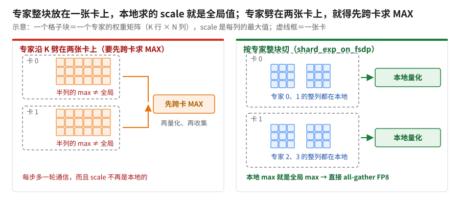
看左半多出的那轮跨卡 MAX。
为什么：先压再搬和先搬再压结果一样，前提是每张卡自己算出的 scale 就是全局那个。
- 上游为什么只接 fixed：常数 scale 处处相同，天然满足这个前提。
- 字节账 [推断：scale 按每列一个 FP32 算]：§1 图下条，比值 (1 + 4/K) ÷ 2，K 大时就是一半。
GPU 上相当于：PyTorch FSDP2 的 float8 all-gather（torchao
enable_fsdp_float8_all_gather）。它是整张量一个 scale，权重切在多卡上，所以也要先做一次跨卡 amax all-reduce（torchao 的precompute_float8_dynamic_scale_for_fsdp把所有权重的这次归约合成一次）；TE current scaling 做量化 all-gather 前同样先同步 amax。把握：源码证实 · 出处：MaxText
layers/moe.py::explicitly_weight_ag、configs/base.yml中shard_embed_moe_on_fsdp的注释；Transformer Engine「FP8 Current Scaling」文档的 amax 归约段；PyTorch dev-discuss「Enabling Float8 All-Gather in FSDP2」；torchaofloat8/fsdp_utils.py
Profile 证据（大号模型 256 芯片，BF16 vs FP8 + QAG，AOT）
| 项 | 变化 |
|---|---|
| step | 约 −20% |
| Routed MoE 内 AllGather async-done | 约 −75% |
| Routed MoE 内 ReduceScatter async-done | 约 −45% |
| GMM/TGMM | 约 −25% |
| QKV 投影 | 约 −15% |
| 路由/重排/其他（抵消项） | 约 +40% |
| 本地 gather offload（抵消项） | 约 +70% |
小号模型上带 QAG 的 profile：前向同构层每层约快 35%——每层 AG 时长减半且提前发、TensorCore（TC）等 AG 降到原来的约 6%、AG 收到后原本要做的 4 个量化 loop fusion 消失。小号模型前向 / 反向与显存：
| 配置 | 前向 / 反向（相对 BF16） | Peak HBM |
|---|---|---|
| BF16 | 基准 | 约 81 GiB |
| FP8，不做 QAG | 前向约 +10%、反向约 +15% | 约 85 GiB |
| FP8 + QAG | 前向约 −15%、反向慢 1–2% | 约 83 GiB |
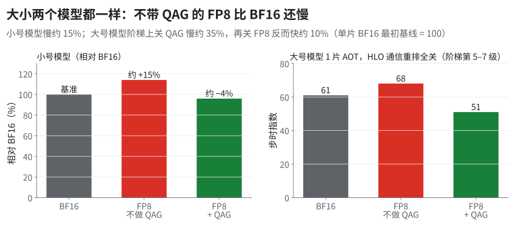
看上条 AG 之后那段量化。
为什么：不带 QAG，AG 字节翻倍，F 张卡还各量化一遍同一份完整权重，这份重复活比省下的乘法还贵。量化每个元素只做一点运算，却要把张量读两遍（TE 文档：「requires reading the tensor twice」），受带宽限制。小号模型上的账：量化 fusion 涨到原来的 4 倍多，而乘法省下的只有它涨幅的一半左右。
GPU 上相当于：FSDP2 不开 float8 all-gather 时，先按 BF16 all-gather，再在每张卡上把完整权重 cast 成 FP8。
把握：文档证实 · 出处：本书 09 §6 JIT 对照里「FP8 不带 QAG → 带 QAG」那一刀的数据；Transformer Engine「FP8 Current Scaling」文档
4.1 五道锁
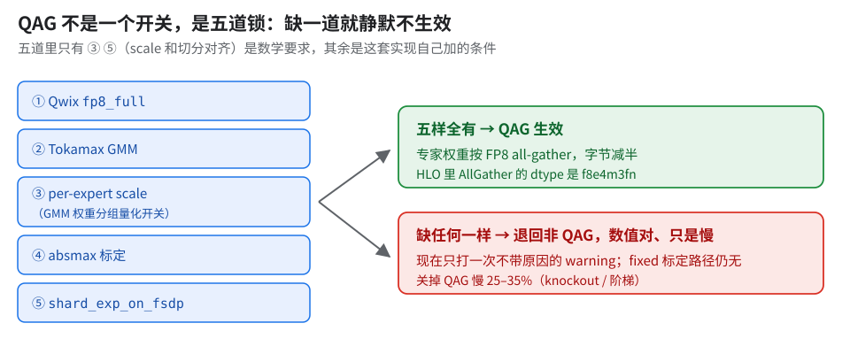
每道锁守什么：
- Qwix
fp8_full：量化类型要走fp8_full这一支，blockwise 等别的类型不进 QAG。 - Tokamax GMM（
use_tokamax_gmm）：只有它认 per-expert scale（反例见下表第 3 行）。 - per-expert scale（GMM 权重分组量化开关）：每专家一套 scale，归属清楚才能先量化后收集。
- absmax 标定：这套实现的 QAG 只接 absmax（上游的那条只接
fixed，见下面「上游能走到哪」）。 shard_exp_on_fsdp：专家沿 FSDP 整块切，每块的 scale 本地算完。
此外还要权重 FP8、gather 轴安全。缺一样就静默不生效；实现只打每进程一次的 warning（lru_cache(maxsize=1)），不带原因，只说「当前路径或配置不支持、退回非 QAG」（日志里是「absmax QAG … falling back」），哪道锁没过要自己查（§9.1 计数脚本）；fixed 标定路径没有 warning。
为什么：每道锁都是一个 if，不满足就走另一条合法路径，数值没错只是慢，所以没有任何信号可报。五道锁里只有「scale 和切分对齐」（per-expert scale ＋ 专家整块切）是数学要求，其余是这套实现自己加的条件；不满足时 XLA 按 BF16 gather、收齐再量化。慢多少：阶梯上关掉 QAG 慢约 35%（knockout 单关约 25%）。所以要分两类处理：回退正确但慢的给 warning；回退本身错的（套专家 0 的 scale）必须报错拒绝。
把握：源码证实 · 出处：MaxText
layers/moe.py::explicitly_weight_ag及其 else 分支注释（「automatically gather … for dynamic absmax scaling」）
怎么开（这项功能上游没有，需自行实现）：打开 absmax QAG 开关，同时要满足 shard_exp_on_fsdp、use_tokamax_gmm、fp8_full ＋ Qwix、GMM 权重分组量化开关、权重 FP8、gather 轴安全，缺一条就打「falling back」退回 bf16 gather（11 · A09）。迁移时 FP8 和 QAG 是一个开关（11 · A09）。
坑：实现里容易写错、而且不报错的五处（只有 8 device 单测覆盖，没有端到端数）
| 错误 | 为什么会错 | 约束 / 防线 |
|---|---|---|
GMM 反向按 scale.shape 推断 scale 归属；8 device 单测构造的「本地只有 1 个专家」（E_local==1）边界上，16 行里 14 行用错了专家的 scale |
形状在这个边界上有歧义，推断不出「这是哪个专家的」[推断]；该边界被 dlhs 掩码盖住、表现正常——潜在的静默梯度错误 | scale 归属显式传入，不靠形状猜 |
校验器用 == "fixed"，运行时用 startswith("fixed") |
两处判断不一致：带参数的 fixed,… 写法，校验和运行时看到的不是同一个分支 [推断] |
校验和运行时共用一个判断函数 |
| 非 Tokamax 的 megablox 路径会静默套用专家 0 的 scale | 那条路径不认 per-expert scale | config 直接拒绝 |
| absmax QAG 开关的条件不满足时静默失效 | — | 一次性 warning；fixed 标定路径没有 warning |
反向 psum_scatter 没按同一归属门控 |
前后向不对称导致 shape 崩溃 | 按与前向相同的归属门控 |
另外两条坑：
- placement 类调度要认得量化器，否则藏不住 QAG 的 AG。decoder 循环里的 FP8 AG 不会被调度：量化链挡住了「只依赖权重」的追溯 [推断]（详见 02 §13.5）。所以 placement 必须能识别量化器，FP8 和 BF16 的字节表要合成一张。
- 显存估算器把 6 种 FP8 类型按 0 字节算，HBM 检查等于被跳过（生产用的两种认得，没踩到 [推断]）。FP8 程序「估出来放得下」不可信。
- 上游能走到哪一步：上游
layers/moe.py的explicitly_weight_ag()只在shard_exp_on_fsdp（或shard_embed_moe_on_fsdp）开、且 GMM 量化规则的权重标定以fixed开头时，才走「本地量化后再 gather」。也就是上游有 QAG，但只配固定 scale；固定 scale 在本书长跑出过尖刺（§2.2），用之前先自己长跑验证。 - 最小骨架（只用本章已有事实，按五道锁的顺序）：
- 专家权重沿 FSDP 按专家整块切（
shard_exp_on_fsdp），保证每个专家只在一个 shard 上； - scale 改成每专家一套
[E,1,N]，由持有该专家的 shard 本地求 absmax（不跨卡求 max）； - 在 GMM 的
shard_map里先本地量化成 FP8，再把 FP8 值和 scale 一起 all-gather； - 反向
psum_scatter按同一归属门控（上表最后一行）； - 条件不满足时打印带原因的 fallback，不要静默退回 BF16 gather（§9）。
- 专家权重沿 FSDP 按专家整块切（
- 验证：同 §9（AllGather 是
f8e4m3fn）＋ §9.1 计数对上。 - 收益能拿回几成：未测。本书只有这套实现全套的数（阶梯约 35%、knockout 单关约 25%），最小骨架没单独量过；如果你们的 placement 类调度认不出量化器，AG 可能藏不住（上面那条坑）。
4.2 负结果：FP8 下保存 FC1 输入没收益
- 做法：借 GPU 经验（FP8 省 HBM 的大头在 FC1 输入），custom remat 里把 FC1 输入 remat 键设为存 device、存量化后的输入。
- 效果（小号模型）：步时慢 1–2%，显存从约 84 GiB 涨到约 92 GiB，多占约 9%；BF16 存 FC1 输入直接 OOM。
为什么：存 FP8 版本只在它替换一份原本存着的 BF16 时才省；这里原本就没存，多存一份是纯增量。GPU 默认存着 FC1 输入，改存 FP8 就减半；本书 remat 基线本来就不存它，而是从已存的路由索引重算（重排 → pad → 量化）。EP=1 下这条重算不跨卡，又能填进反向的通信等待 [推断]，所以上面显存、步时两头都亏。EP>1 或本来就存 FC1 输入时结论可能反过来。
把握：推断 · 出处：该实验的 remat 配置（基线不存 FC1 输入）；COAT（arXiv 2410.19313）附录的同类反例
5.amax 只在 DP replica 内求 MAX：DCN 上的 MAX 降到 0
前置：§2 配方（absmax 每步要现求 amax）；多片（DP 跨 DCN）才有意义。和 QAG 没有依赖：DP 副本间多余的 MAX 与「先量化还是先收集」无关。后续：无。
收益：每步几十条跨 DCN 的 AR/MAX → 0 条；没有 step time 数。「几十 → 0」是 HLO 计数（03 §6）；当前实现只验证了 loss 对齐和 CPU 上「data 轴无 MAX」，没有重新编 AOT 核对。
怎么考虑的：DCN 小包贵在固定开销不在字节（03 §2），每步几十条小 MAX 正好踩在最贵的地方；而这些 MAX 数学上是多余的。
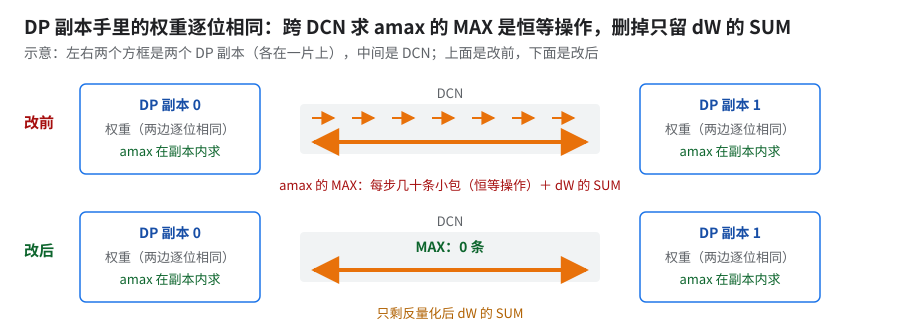
看中间 DCN 那一栏。
怎么开 / 实现：amax 只在 DP replica 内求 MAX——data 轴单独 manual 的 partial shard_map；只对反量化后的 dW 做 DP SUM。
验证：小号模型 DP=2 1000 步 PASS（LM 差不到万分之一）。
为什么：DP 副本手里的权重逐位相同，跨 DP 取 MAX 本来就是恒等操作，删掉不改数值。
- 权重和激活：各副本每步做同一份更新，本地算出的权重 amax 本来就相等；激活只在本副本内量化、本副本内用，也轮不到别的副本。
- scale 只需在「量化它的人和用它的人」之间一致：跨卡收集量化值时才需要先同步 amax（TE 的说法是 gather 前要 amax synchronization）；DP 副本之间只交换反量化后的 dW。
GPU 上相当于：把 Transformer Engine 的 amax 归约组（
fp8_autocast的fp8_group，新版autocast里叫amax_reduction_group）缩到不跨 DP 副本（类比）。把握：推断 · 出处：恒等那条按 DP 复制参数的语义推出；amax 同步时机见 Transformer Engine「FP8 Current Scaling」文档的 amax 归约段；本实现针对哪个张量未核
6.pipeliner 与 FP8：单片是毒，多片是药
前置：§4 QAG（FP8 + QAG 把 AG 和 GMM 缩短后，RS 的相对占比才变大）。后续：§7 cost profile。
收益：
- 单片：FP8 不关这组开关。
- FP8 下关掉
all_gather_decomposer＋collective-pipeliner-forward慢约 15%（每日回归指数 52 对 45；多次复测都在 52，不是单次抖动；两组只差这一处配置）。 - BF16 在每日回归里没看出差别（指数 54；另一份代码上两个 pass 一起关慢约 3%，见下面「怎么考虑的」）。
- 阶梯第 1 级单关 XLA pipeliner 慢约 25%（指数 37 → 45），同量级（09 §4.1）。
- FP8 下关掉
- 多片：2 / 8 片关 pipeliner 各快约 9%（02 §16.2）；10+ 片 JIT 基线和 10+ 片 AOT 中间档都关着。
同一开关，单片 FP8 上关掉慢 15–25%，多片上关掉快约 9%。单片的两个数不是同一测量：每日回归里 decomposer 和 pipeliner 两个开关一起关约 15%，不能全记在 pipeliner 头上；单变量看阶梯第 1 级，单关 pipeliner 约 25%。
怎么考虑的：关这组 flag 是为让 BF16 在较小多片配置（每片仍是 FSDP512）上过 AOT（03）。BF16 单片关它只慢约 3%（单次 A/B，见 02 §16.4；和上面每日回归的 FP8 数不是同一份代码，不算严格对照），FP8 单片关它却慢约 15%，所以单片 FP8 打开它。
多片仍关：FP8 在这个多片配置上开着它编 AOT 会 OOM（03 §7）。
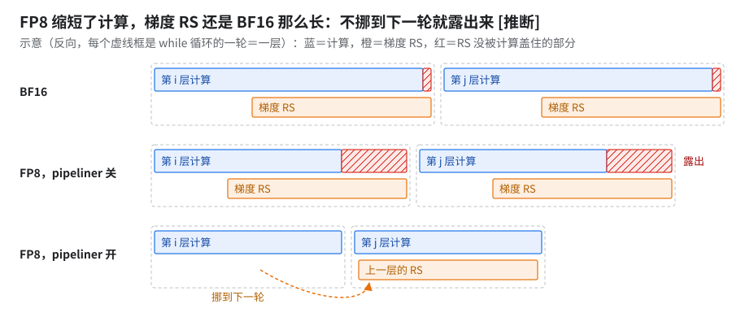
看中间行的红色。
为什么：FP8 把 AG 和乘法都缩短了，梯度 RS 却还是 BF16 那么长，藏不住时露出的比例更大。判据：同一份源码 BF16、FP8 各跑一遍 pipeliner 开／关，比 RS 暴露占比。
GPU 上相当于：FSDP 在独立 stream 上发梯度 RS、和后面的反向计算重叠；关 pipeliner 就像让 RS 和计算排成一串（类比）。
把握：推断 · 出处：本书 09 §4.1（pipeliner 只挪 RS 位置、RS 仍 BF16）的数据
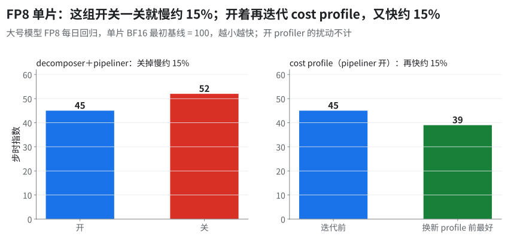
怎么判断开还是关：判据别按片数记，按两样能在自己集群上测的量 [推断]：
- HBM 余量：pipeliner 开着编一遍，看编译期 temp（编译报告里的临时缓冲总量，见 06 §10）离 92 GiB 的 placement 准入线（容量 − 4，不是运行时上限 94.74 GiB）还差多少。多片（2 / 8 / 16 片）开着时约 93 GiB，离运行时上限只剩 1 GiB 多、已超准入线约 1 GiB，关掉降到约 83 GiB；单片开 / 关 pipeliner 都约 87 GiB，没碰线（02 §16.2；判据见 02 §16.4）。
- cost profile 含不含 DCN：单片抓的 profile 只有 ICI（02 §16.3）。拿它去编多片，调度器对 DCN 那段是瞎估的。
- 两样都没问题再 A/B 开 pipeliner；任一不满足，先按「关」处理。
7.cost profile 再降一截
前置：§6（pipeliner 状态定了，profile 才有意义）。后续：无。
- 同源码只换 cost profile：约 −7%，换后就是满配（指数 37）；同代码同 profile 再测一次结果不变（1 片 AOT 口径）。
- 每日回归口径：pipeliner 状态定好后（指数 45），随 cost profile 迭代降到最好 39（换新 cost profile 之前；换后是 36。开 profiler 时步时会被扰动到 50，不计）。和上一条不混比。
- 不是每次重抓都有效：重抓也可能只快不到 1%。cost profile 要随代码重抓、要迭代，量一次没动别下结论；本书数字用的是最新一份。
怎么考虑的：pipeliner 状态和精度一变，旧 profile 里的耗时就过期；重抓 profile 不改代码，是这一步最便宜的一刀。
原理：主要杠杆是 cost profile——给调度器一份按本模型实测的算子 / 通信耗时表。[推断] FP8 缩短了 AG / GMM，旧表里的耗时不再准，调度器要新表才能把它们塞到合适的计算底下。细节见 02 §8。
8.让 FP8 乘法本身再快：kernel 级（未进生产）
前置：§4（通信藏住后，剩下的收益在 GMM 上）。后续：fused MoE kernel 见 05。
收益：都是 kernel 级，没有端到端数。
- fused MoE 前向 FP8 约 −20%（kernel 微基准）；FP8 与 BF16 输出平均相对差约 7%（kernel 级对拍），未进生产，没做整训练 loss 验证。
- 反向直接换 FP8 比 BF16 还慢约 4%。要「激活只量化一次、复用打包好的 operand、跨 dX 分块复用量化后的 cotangent」，反向 kernel 才比 BF16 快约 10%；再融合共享专家，EP2 反向又快约 4%。
- 优化版对原生实现的输出差约 6%、路由权重梯度差一成出头，联合训练精度等价没确认。
怎么考虑的：§4 之后通信已经藏住，FP8 剩下的收益只在 GMM 本身，要再快只能下到 kernel 级。
原理：反向直接换 FP8 会反复付量化和打包的开销，抵掉了乘法的提速；激活只量化一次、打包好的 operand 跨分块复用，量化成本摊薄后 FP8 乘法的优势才显出来 [推断]。
9.验证：别静默退回 BF16
前置：§4（QAG 是最容易静默失效的一刀），但这节的检查贯穿所有 feature。后续：无。
⛔最危险的不是崩而是悄悄没开——「不崩、不报错、loss 还更好看」。每修一个这类 bug，之前的 A/B 就要重做——修之前量到的「FP8 vs BF16」可能根本没在比 FP8。
| 陷阱 | 发生了什么 | 改成 |
|---|---|---|
用 == "fp8_full" 精确匹配判断量化类型 |
fp8_blockwise 的专家 GMM 静默变 BF16；受影响的配置里专家 GMM 也没走 GMM v2 |
判断须覆盖全部 FP8 量化类型 |
AOT 路径直接构造 Transformer，跳过 maybe_quantize_model |
AOT 可执行文件整个是 BF16 | AOT 路径必须走 create_model；跳过量化时产出的 AOT FP8 数都要打问号 [推断] |
| 首尾层 BF16 三键配上不对的量化类型 | 静默 no-op | 修法未核 |
| absmax QAG 开关的条件不满足 | 静默 no-op | 一次性 warning（§4.1） |
| 反向梯度 dtype 写死 E5M2 | 不看 FP8 格式开关，本身是静默 bug | 必须遵从 FP8 格式开关 |
| 日志里的「absmax QAG … falling back」警告（10+ 片 JIT 基线上见到） | 看着像回退，但 FP8 层 QAG 实际生效（注 1） | 按 AG dtype 判，不按这行警告判 |
| Qwix 规则按 module path 静态匹配 | nn.scan 迭代共用一个 path → 首尾层 BF16 只能拆 scan（§3） |
拆 scan，checkpoint 保持旧布局 |
Qwix 量化 scope 前缀跨不过 ToNNX 边界，且有深度限制 |
MTP 层没继承 fp8_blockwise，静默跑 BF16。正则之外第二个漏量化来源（13 O04） |
前缀穿过 ToNNX、去掉深度限制（证据只有一条 loss 曲线）；同样打印命中模块清单验证 |
| FP8 能不能过 BF16/Megatron 的 loss 门 | 过不了（§11） | 降为 informational |
- 注 1：警告函数带
lru_cache(maxsize=1)，任一调用点回退就打一次（[推断] 来自末 2 层 BF16）。实测 QAG 开时每 pod 1 行、关时 0 行，开时 AG 是f8e4m3fn；开 / 关 QAG 的步时对比在 2 片 JIT 对照里量（快约 15%，09 §6）。
最低验证：编译后 HLO 有没有 f8e4m3fn、QAG 的 AllGather dtype 是否 FP8。
9.1 该量化的层是不是都量化了：数 HLO 里的 f8 乘法
上面那条只说明至少一处量化了，抓不到「某一类模块漏了」，要按模块数。通用做法，本书模型没跑过这段脚本。
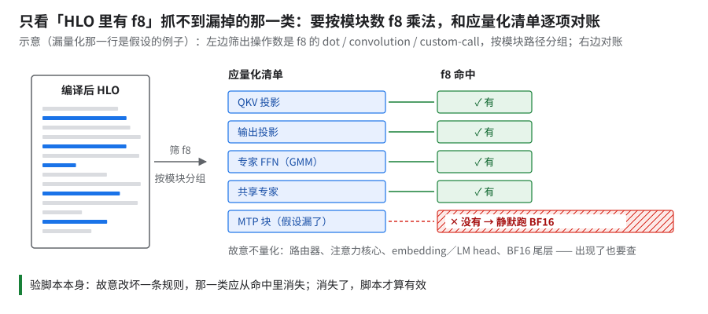
看右列 ✕ 那行（假设的例子）。验脚本时可故意让共享专家不匹配，那一类应从 hits 里消失。
- 拿编译后 HLO：
jax.jit(train_step).lower(*args).compile().as_text()，或设XLA_FLAGS="--xla_dump_to=DIR --xla_dump_hlo_as_text"，读*after_optimizations.txt。 - 列应量化清单：照 §3 的表写下应命中和故意不量化的模块（图中清单）。
- 数命中：找操作数是 f8 的
dot、convolution、custom-call（Pallas GMM 是 custom-call），按metadata={op_name=...}里的模块路径分组：
import re, collections
F8 = re.compile(r"f8e4m3fn|f8e5m2")
types, hits = {}, collections.Counter()
for line in open(hlo_path):
m = re.match(r"\s*(?:ROOT )?(%\S+) = (\S+)", line)
if m: types[m.group(1)] = m.group(2) # 先记每个值的类型
for line in open(hlo_path):
m = re.search(r" (dot|convolution|custom-call)\((.*?)\)", line)
if not m: continue
args = m.group(2) # 操作数；新版打印会带类型，旧版只有名字
names = re.findall(r"%[\w.\-]+", args)
if F8.search(args) or any(F8.search(types.get(n, "")) for n in names):
op = re.search(r'op_name="([^"]+)"', line)
path = re.sub(r"(layers?)_\d+", r"\1", op.group(1)) if op else "?" # 去掉层号，按你的命名改
hits[path] += 1
for p, c in sorted(hits.items()): print(c, p)
- 对账：
- 层用 scan 时，while 体只出现一次：层数 ＝ 体内命中数 × trip count（while 的
backend_config里一般有known_trip_count）。拆了 scan 的首尾段各自是一个 while 或直接展开，分开数。 - 以前向 E4M3 为准；
hybrid配方的反向梯度是 E5M2，混在一起数会重复。 - MTP 这类经包装层接进来的模块单独核一遍（§9 表倒数第二行就是漏在这里）。
- 层用 scan 时，while 体只出现一次：层数 ＝ 体内命中数 × trip count（while 的
10.FP8 在规模上的遗留问题
| 问题 | 证据 | 状态 |
|---|---|---|
| FP8 在较小多片配置上 AOT OOM | HLO 临时量约 157 GiB，是同代码 BF16（关 pass）的 2.1×；FP8 那份没关两个 XLA pass（03） | 关 pass 绕过（即 §6 多片关 pipeliner） |
| FP8 编译显存超 HBM 上限约 4% | 残差只存分片后仍 OOM，最大的几块分配都是尾层 BF16 权重的 all-gather（尾层走不了 QAG，§3）。把这个 gather 也挪进 GMM custom VJP（残差只存本地分片、反向现 gather）的改法效果没测（对照：10+ 片 JIT 基线编译估计约 84 GiB/device，放得下） | 效果未验证 |
| QAG 与 EP>1 不兼容 | 依赖 shard_exp_on_fsdp；EP>1 的 FP8 dispatch 没做 |
未做 |
| fused MoE 里的 FP8 | kernel 级前向约 −20%、反向约 −10%（§8） | 见 05 篇 |
| 大 layout + TensorCore gather 会破坏原生 FP8 MoE 数值 | 输出、dW 相对 L2 约 1.4（全错），条件与修法见注 3 | 修法未进生产；默认 SparseCore（芯片上专跑搬运的独立核，见 README 术语表）gather 路径没事，换 gather 落点的 flag 前要重跑数值对拍 |
| 多模态版 FP8 2 片 AOT OOM | 2 片 512 芯片 AOT，稳定复现，每次都报 Attempting to allocate 1.39G … 1.38G free，只差约 10 MB；运行时设了 RS 单 SC 的 flag（注 4） |
未解决；见 06 §7、08 |
- 注 3（大 layout + TensorCore gather）：
- 条件：
xla_tpu_impure_enable_large_2nd_minor_layout=true且xla_tpu_offload_gather_to_sparsecore=false（gather 走 TensorCore）。 - 机理：BF16 gather fusion 里夹的一次 T16→T8 layout copy 把路由后的激活和权重梯度算坏。
- 修法：原生 permutation gather 及其反向 gather 后加 BF16 optimization barrier，把 layout 转换挡在 fusion 外；修后两种 layout 下输出和梯度逐元素一致，MoE VJP 无回退。
- 条件：
- 注 4：
xla_tpu_use_single_sparse_core_for_reduce_scatter_offload=true让 RS 只用 1 颗 SC，CI 每日回归也这么设；生产 FP8 的编译配置里是=false。
11.精度：没有闭环
FP8 对 BF16 的差，要拿去和 BF16 自己重跑的差比；没有这个噪声底，任何阈值都是拍的。下表的数都缺这把尺子。
| 指标 | 数字 |
|---|---|
| 大号模型 FP8 vs BF16/Megatron 参考，50 步 | step 0 和平均 LM 差都在千分之一出头，MTP 近千分之二，远超 BF16 门槛（万分之二）；阈值降为 informational（理由未核） |
| 每日回归 | 平均 LM 差不到千分之一，MTP 千分之一点几；每日回归里出现过 loss 硬失败 |
| 长跑计划 | 200B token（估 FP8 比 BF16 少用约 20% 时间）；没跑出结果 |
| 小号模型 FP8 fused 1000 步 | 对 FP8 参考 PASS（LM 差不到万分之一）；参考自身没过 Megatron 阈值 |
| 单独验证：大号模型 FP8 1 片 1000 步（JIT） | 平均 LM 差不到千分之一、MTP 千分之一点几，过 FP8 放宽阈值 0.1% / 0.2%（非 BF16 的万分之二）；与每日回归逐步差不到十万分之一，600 步后不再变大 |
为什么：FP8 线手里没有同模型的噪声底，只能借一个口径不同的数当量级参考。12 §6 的约万分之四是多模态模型 GPU 对 GPU 重跑，本节约千分之一是大号模型 TPU FP8 对 GPU 参考，还混着系统差，万分之四只能当量级参考（未核）。逐步差走平只排除累积发散，排除不了晚期离群点（§2.2 fixed 那条）。
把握：推断（量级参考） · 出处：arXiv 2209.05433（落在换种子的波动内）；DeepSeek-V3 §3.3（相对误差低于千分之 2.5）
✅给要跑几个月长训的团队要做 FP8，先开 QAG（§4）；长训放行前要过的闸：
- 功能闸：五道锁全开（§4.1 图），§9.1 的 f8 计数和应量化清单对上，QAG 的 AllGather 是 f8。
- loss 闸：这套 CI 的做法可照搬，阈值不能照搬（为特定 checkpoint 和参考曲线定的，不是推荐值）。
- 做法：对同一 checkpoint 续训的 GPU 参考曲线比相对 loss 差；软阈值 step 0 一档、步 1..N 平均一档（LM 0.1%、MTP 0.2%，即上表「放宽阈值」）。没有 MTP 就只看 LM。
- FP8 对 BF16 参考的软阈值整体降成 informational，只报不拦；想当闸用要自己升成硬闸。
- 真正会拦的：硬限（软阈值 × 10，每步另有千分之五的下限，折算每步 LM 2% / MTP 5%、平均 LM 1% / MTP 2%）和 NaN／Inf。
- 先量噪声底：同配置 BF16 换种子重跑一次，拿它对 GPU 参考的差当尺子（见本节开头）。
- 闸会不会响：故意喂一个坏 run（如关掉 QAG 或改坏一条量化规则），确认闸报错（13 W08）。
- 长训多长、差多少算过：需自定。唯一的长跑计划（200B token）没跑出结果，没有数可抄。要盯的指标：
- step 0 相对 loss 差、步 1..N 平均相对差（LM、MTP 各一份）；
- 逐步差在变大还是走平（参照上表最后一行）；
- NaN／Inf；第 0 步 grad norm 的量级（13 N07）；
- 功能闸三项在长跑的 HLO 上再数一遍。
考考自己
为什么 QAG 必须和「per-expert scale」一起做，不能单独做？ 答：
- QAG 要求每个专家的 scale 只由持有它的 device 决定、随值一起收集；共享 scale（
fp8_full默认[1,1,N]）各 shard 算得不一致。 - 反向
psum_scatter也要按同一归属门控（前后向不对称会导致 shape 崩溃，§4.1 坑表）。
考考自己（续）
FP8 per-channel 的 scale 为什么挂在输出维 N，而不是求和维 K？按列求 max 要不要把一列从内存里「凑到一起」？ 答：
- scale 要在求和的 K 项上相同才能提到 Σ 外，所以沿 K 不变、沿 N 变；沿 K 变就得分段加分段乘（blockwise 慢的原因）。
- 不用：逐行流过、一 lane 一列维护当前 max，是便宜方向（§2.3）。